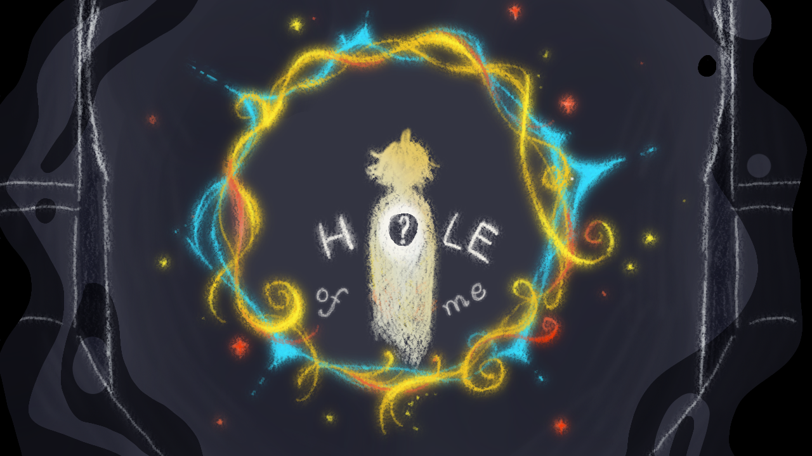

GRADUATION THESIS 毕业设计
Thesis Project 毕业设计
01. Project Poster 01. 毕设海报

02. About the Project 02. 项目介绍
My thesis project is a visual storytelling piece presented in a storyboard format. It follows a young woman who has a physical hole in her body, representing the emptiness, confusion, and uncertainty she feels inside. Through character design, environment design, composition, color, and music, I created a visual story about her journey of self-discovery. 我的毕业设计是一部以分镜形式呈现的视觉叙事作品。 故事讲述了一位身体上有一个洞的年轻女性， 这个洞象征着她内心的空虚、困惑和不确定感。 我通过角色设计、场景设计、构图、色彩和音乐， 创作了一个关于自我探索的视觉故事。
03. Character Design 03. 角色设计
04. Environment Design 04. 场景设计
05. Storyboard 05. 分镜设计
The storyboard shows the protagonist's journey through different places and experiences, using camera angles, compositions, and transitions to express her emotions. 分镜展示了主人公在不同地点和经历中的旅程， 并通过镜头角度、构图和转场来表达她的情绪变化。
Open PDF in a New Tab ↗ 在新标签页打开 PDF ↗
06. Final Film 06. 最终作品
Through this journey, the protagonist learns to accept uncertainty and continues to explore the world around her. The hole never completely disappears, but it no longer makes her feel lost. 在这段旅程中，主人公逐渐学会接受不确定性， 并继续探索周围的世界。她身体上的洞并没有完全消失， 但它不再让她感到迷茫。
← Back to Work ← 返回作品